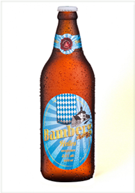

- Chope, 355 ml e 600 ml.
Bamberg Helles
Tradicional cerveja clara bebida no cotidiano do cidadão de Munich. Cerveja de baixa fermentação com 5,0% de teor alcoólico, fácil de ser bebida e refrescante. Harmoniza com pratos leves, não gordurosos e pouco temperados, mas devido a uma lúpulagem marcante, pode-se harmonizar com petiscos. Temperatura ideal de consumo entre 4ºC e 6ºC.
Aroma: Presença de malte, pão, caramelo, floral do lúpulo.
Aparência: Coloração amarela, com espuma persistente e cristalina.
Sabor: Nesta cerveja podemos notar a presença marcante do malte, mas também é nítido o amargor do lúpulo, dando equilíbrio.
Sensação na boca: Corpo médio, com média carbonatação.